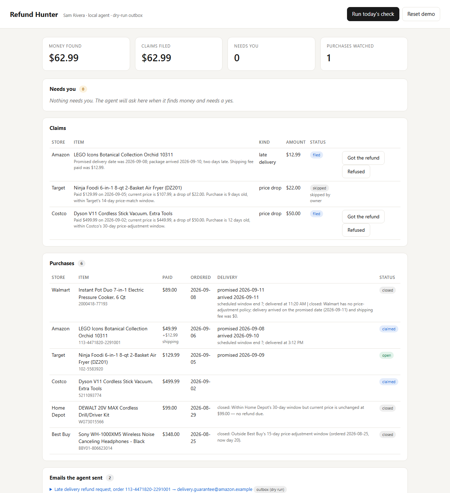

Refund Hunter
A little helper that gets your money back from stores, and only bothers you to ask "yes or no?"
The problem, in one story
Sam buys an air fryer at Target for $129.99. Nine days later, Target drops the price to $107.99.
Here's the thing most people don't know: Target has a rule. If their own price drops within 14 days of your order, they will give you the difference back. That's $22, just for asking.
But Sam would have to notice the price dropped, know the rule exists, dig up the order number, write to Target, and then chase them if they don't answer. For $22? Nobody does that. So the store keeps the money.
This happens all the time. Costco gives you 30 days. Amazon gives your shipping fee back when a package arrives after the date it promised. Grocery delivery apps give a credit when the order is late. Small amounts, everywhere, that almost nobody collects.
What Refund Hunter does
Refund Hunter is a computer program, an agent, that does all of that boring work for you. Every morning, on its own:
1It reads your receiptsIt looks at the order emails in your inbox: what you bought, where, how much, when it was supposed to arrive. It ignores newsletters and messages from friends.
2It knows the rulesIt has a little table of store rules: how many days you have to ask for a price adjustment, and what you get when a delivery is late.
3It checksFor every recent purchase, it looks up today's price and compares delivery dates with the promised ones.
4It asks you, onceWhen it finds money, it stops and asks one question. You tap Yes or Skip. If it finds nothing, you never hear from it.
5It sends the claimIf you said yes, it writes the email to the store with the order number, the dates, the rule, and the amount, and sends it.
6It follows upIf the store stays quiet for 5 days, it politely nudges them again. You don't have to remember anything.
Refund Hunter
Target dropped the price of your air fryer from $129.99 to $107.99. You ordered it 9 days ago, so you're still inside Target's 14-day window. Want me to claim $22.00?
You
Yes, file it
Refund Hunter
Done. I emailed Target with your order number and the rule. I'll check back in 5 days if they don't reply.
The simplest way to say it: imagine a very patient friend who reads all your receipts, knows every store's fine print, checks prices every day, and never sends anything without asking you first. That's Refund Hunter.
How it works under the hood
Refund Hunter is made of two small "brains" and a few tools. Each brain is an AI agent, built with a toolkit called Strands Agents and powered by Claude, an AI model running on Amazon's cloud.
Your inboxorder & delivery emails
→
Readerturns emails into a tidy list of purchases
→
Hunterchecks rules, prices, and dates
→
Pauseasks you: yes or skip?
→
Claim emailsent to the store
The Reader. Emails are messy. The Reader's only job is to read them and fill in a neat form for each purchase: store, item, price, order date, promised delivery date, and later, the day it actually arrived. It's told to never make anything up: if an email doesn't say a date, the field stays empty.
The Hunter. This is the one that thinks. It has five tools it can use, like buttons on a remote:
| Tool | What it does |
|---|
| list purchases | "Show me everything recent that's still worth checking." |
| look up policy | "What are Target's rules?" (from the little table of store rules) |
| check price | "What does this item cost today?" (reads the product page) |
| close purchase | "This one is too old, stop checking it." (with a reason) |
| file claim | "There's money here." This tool stops and asks you before doing anything. |
The pause is the clever part. When the Hunter presses "file claim," the program freezes right in the middle of the job and saves its exact spot, like bookmarking a page. The question appears on your screen. You might answer in ten seconds or in two days. When you do, the Hunter wakes up at the bookmark and carries on: yes means it writes and sends the email, skip means it drops it. Programmers call this an interrupt. It's what makes the agent safe: it can never send anything you didn't approve.
The schedule. A timer in the cloud (Amazon EventBridge) wakes the agent once a day. The agent's memory (your purchases, claims, and answers) is kept in a cloud database (DynamoDB). The bookmarks for paused questions are kept in cloud storage (S3). The agent itself runs on Amazon Bedrock AgentCore, which is like a room in the cloud where the agent lives and works.
What you see
One simple page. Four numbers at the top: money found, money claimed, questions waiting for you, purchases being watched. Below that: the questions, the claims, your purchases, and every email the agent sent, so you can read them yourself.

Things worth knowing
- It never spends or sends without a yes. The only thing it does on its own is read and check.
- The demo uses a pretend inbox. Made-up person, made-up orders. The same program can read a real Gmail inbox if you give it permission.
- The store rules live in a plain text file anyone can edit. If a store changes its policy, you change one line.
- If it can't find today's price for something, it claims nothing. Better silent than wrong.